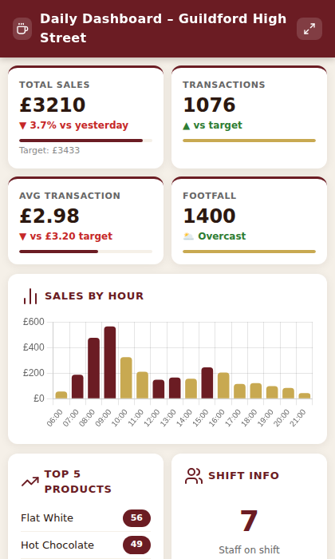
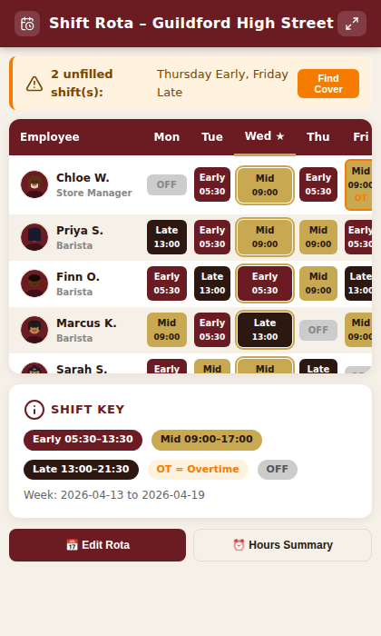
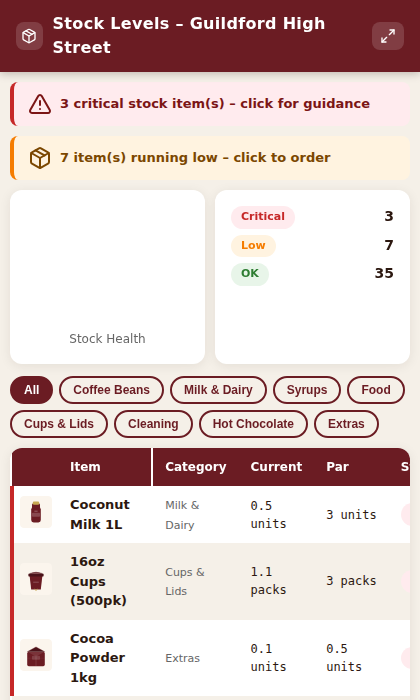
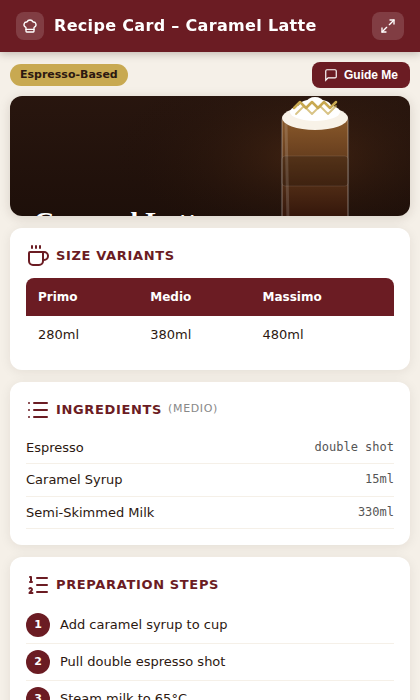
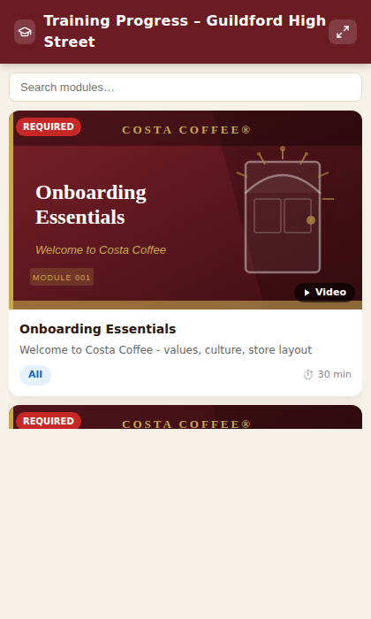
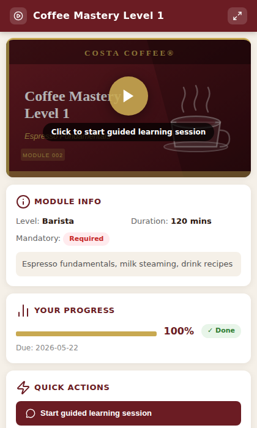
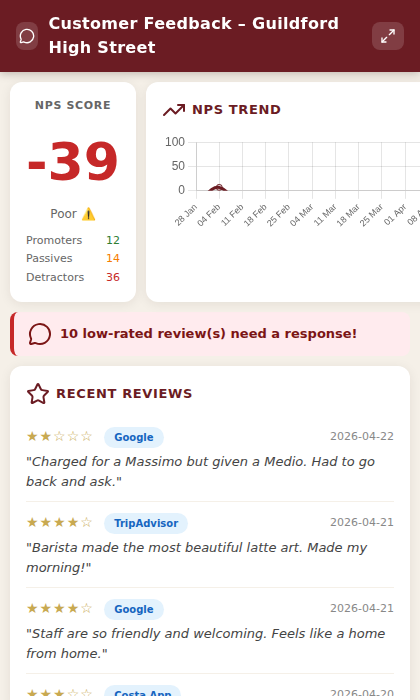
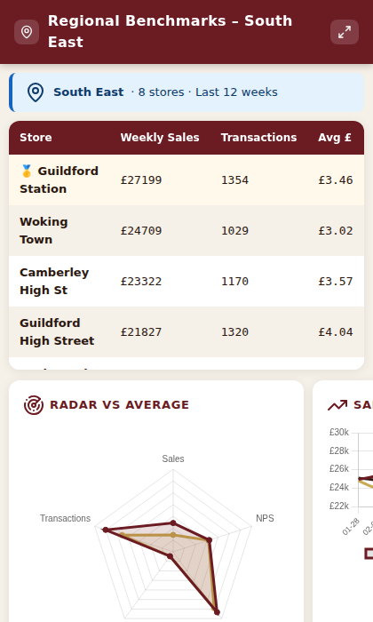

Costa Coffee Frontline AI Agent
An MCP server that powers a Costa Coffee frontline AI assistant for baristas, shift managers, store managers and regional managers. Built with FastMCP and rendered through Jinja2 HTML widgets — but the agent is more than the server. As a Copilot agent it also has native SharePoint, web-search and image understanding, so it combines live data, documents and photos in a single conversational flow no mobile app can replicate.
Why an AI agent — not just a mobile app
A mobile app gives you menus and screens. This agent gives you a thinking partner that reasons across sources.
Turns signals into staffing advice
Combines the forecast, local events and store history into specific, actionable guidance — "rain + rail chaos = lots of people sheltering with a coffee; double-check oat milk and cups."
Reads a photo and acts
A barista uploads a photo of the milk fridge at 8°C — the agent flags the food-safety breach, cross-references the SharePoint manual, and logs the incident in one conversational turn.
Knows who's affected by name
A rail strike surfaces the specific staff whose commute is hit, and recommends cover actions — not just a generic alert.
Chains work in one conversation
Stock → order → log action → notify manager. Every interactive element uses the OpenAI Apps SDK sendMessage API to send follow-on prompts back to Copilot.
The widget surface
Every widget is Costa-branded, renders in a mobile-sized Copilot panel, and turns each tap into a guided follow-on prompt.








Sam's Wednesday morning
It's 7:15am on a rainy Wednesday and there's a rail disruption on the line. Sam unlocks the store and, hands-free, asks: "Morning. What do I need to know about today?" — the agent runs the weather and travel tools in parallel, spots that two crew members commute from Woking, and warns of a commuter surge from 7:30am.
Over the next hours it reads a photo of an out-of-range milk fridge and logs the incident, flags oat milk running critical and drafts an emergency transfer, updates the rota to cover a late arrival, coaches a new starter through a Caramel Latte allergen question, and drafts a reply to a queue-complaint tweet — all in one continuous conversation. That's the difference between a screen and a thinking partner.